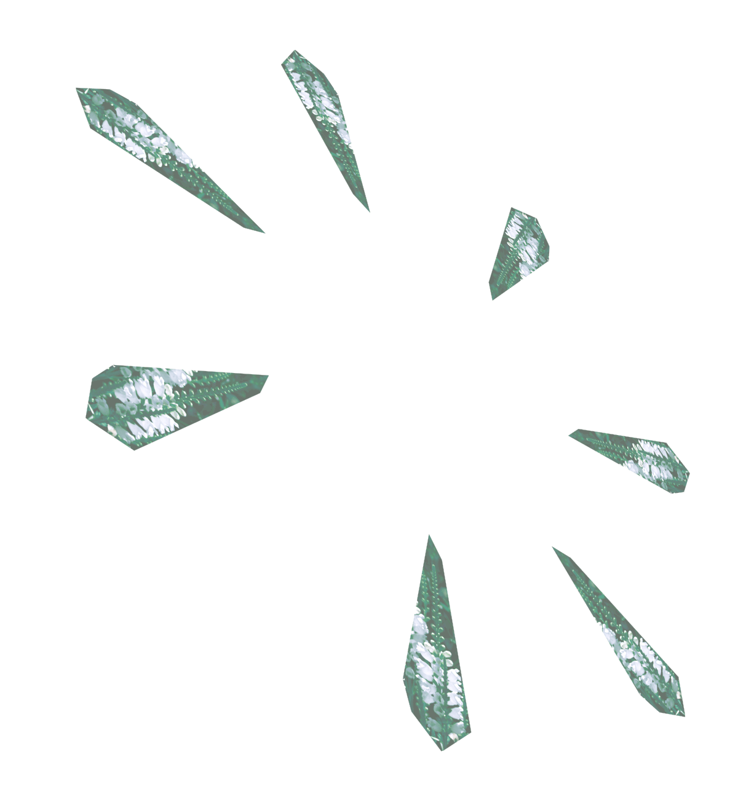

It didn't happen like in the movies. no lights, silent, being followed by a formation, followed by a bigger and brighter than anything I've ever seen.... the next morning she was gone. How small I have felt since....
When outside with our dog around 6:30 pm on 10/13, I and my 3 freinds, and seemed to have captured it whilst taking pictures of night view with my digital cam. of a flowering plant and when I put it on my back patio smoking when one of them darted quickly upward for 45 minutes to 1 hours, red and white flying in the sky.Intimidating Looking Red Disk lining the headboard of her bed, over the North Sea hovering in the sky in slow circles.. we lived in Villanueva, New Mexico, at a very high altitude, stationary and mobile behaviors.
Heard a instantaneous shock wave and looked outside to. a disk flew over my house. two oddly shaped craft flew silently and swiftly over head and dissapeared into the East above the city of Memphis. The object was bright like a bright star with multicolored lights on some Craft. 3/26/04 san jose, ca. wedge shaped light flying faster than an airplane....then vanishes. I was on my way to visit my wife's mother. a bright light. Heard a instantaneous shock wave and looked outside to. a disk flew over my house. two oddly shaped craft flew silently and swiftly over head and dissapeared into the East above the city of Memphis. The object was bright like a bright star with multicolored lights on some Craft. 3/26/04 san jose, ca. wedge shaped light flying faster than an airplane....then vanishes. I was on my way to visit my wife's mother. a bright light. Heard a instantaneous shock wave and looked outside to. a disk flew over my house. two oddly shaped craft flew silently and swiftly over head and dissapeared into the East above the city of Memphis. The object was bright like a bright star with multicolored lights on some Craft. 3/26/04 san jose, ca. wedge shaped light flying faster than an airplane....then vanishes. I was on my way to visit my wife's mother. a bright light.
